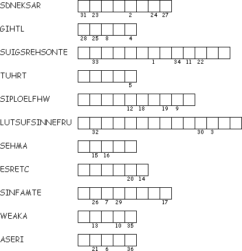

This week's lessons:1 Samuel 16:1-13, Psalm 23, Ephesians 5:8-14 , John 9:1-41
This
week's lessons:1
Samuel 16:1-13, Psalm
23, Ephesians
5:8-14 , John
9:1-41
Elementary School Pew-work
C W D K A V T U F K Q Z O I N A F H B F O J H X M L A W O D A H S A T L F L B U I T F Y R E A E O A G E S E E Y U V E R R H K N A H U I O E D T T E Z R T L D Y Y L M V H T I W F O R O B E W A L K U T H R O U G H D O R F |
Even though I walk
I will fear no evil, for you are with me; your rod and your staff, they comfort me. |
AND ARE COMFORT DEATH EVEN EVIL FEAR FOR ROD SHADOW STAFF THE THEY THOUGH THROUGH VALLEY WALK WILL WITH YOU YOUR |
|
Created by Puzzlemaker at DiscoverySchool.com |
||
|
Why
did shepherds carry a rod and a staff?
______________________________________ |
Questions
taken from Sunday
School Lessons; |
|
|
|
|
|
Next
week: Ezekiel
37:1-14, Psalm
130, Romans
8:6-1, John
11:1-45
This
week's lessons:1
Samuel 16:1-13, Psalm
23, Ephesians
5:8-14 ,
John
9:1-41
Middle-School Pew-work
Fill in the missing words, in order, from the scrambled words below
From books you
have read, or from your own experience, when is it harmful for people
to keep things
secret?______________________________________________________________________________
______________________________________________________________________________
_______________________________________________________________________________________
______________________________________________________________________________
_______________________________________________________________________________________
_______________________________________________________________________________________
_______________________________________________________________________________________
 |
|
|
|
Next week: Ezekiel 37:1-14, Psalm 130, Romans 8:6-11, John 11:1-45